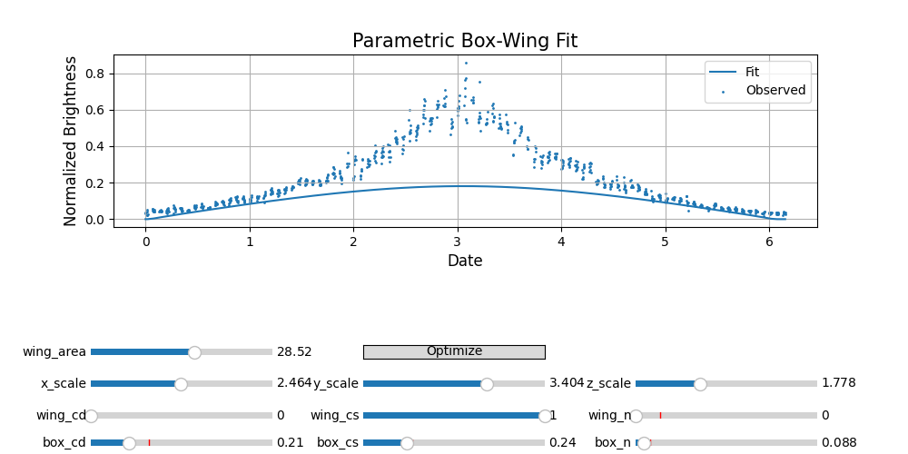

Note
Go to the end to download the full example code
Parametric Box-Wing Inversion#
Downloading tiles for N32W106.hgt
395533.9929816302
395533.9929815272
395533.9929815259
395533.99298162886
395533.99298157863
395533.9929816354
395533.9929816413
395533.9929816216
395533.99298162514
395516.75792159507
395516.75792134635
395516.75792134716
395516.7579215926
395516.75792154286
395516.75792160426
395516.757921665
395516.7579215425
395516.7579215863
395292.7479653605
395292.74796443374
395292.74796444346
395292.7479653578
395292.74796530517
395292.7479653898
395292.747966355
395292.74796454544
395292.74796533195
391240.71599477786
391240.7159904211
391240.7159904728
391240.71599477786
391240.71599470853
391240.71599477786
391240.71599477786
391240.7159835932
391240.715994636
310601.2809365804
310601.2809181045
310601.28091832943
310601.2809365804
310601.28093649785
310601.2809365804
310601.2809365804
310601.2808689427
310601.2809361691
1793132.6859617648
1793132.686096075
1793132.6860944298
1793132.6859617648
1793132.6859619727
1793132.6859617648
1793132.6859617648
1793132.6854497206
1793132.6859627084
268656.6081802741
268656.60816522036
268656.60816540394
268656.6081802741
268656.608180212
268656.6081802741
268656.6081802741
268656.60812151915
268656.6081798793
250298.81642821117
250298.8164333212
250298.81643325888
250298.81642821117
250298.81642820724
250298.81642821117
250298.81642821117
250298.8164141566
250298.81642802057
249682.95348610447
249682.953485498
249682.95348550536
249682.95348610447
249682.9534860855
249682.95348610447
249682.95348610447
249682.95346055136
249682.9534858532
249573.6679982446
249573.66799918722
249573.66799917578
249573.6679982446
249573.6679982297
249573.6679982446
249573.6679982446
249573.66797588867
249573.66799800965
395368.978591801
395368.978591801
395368.978591801
395368.978591801
395368.9785918008
395368.978591801
395368.978591801
395368.978591801
395368.9785918266
361247.59294307395
361247.59294307145
361247.5929430715
361247.59294307395
361247.59294276126
361247.59294307395
361247.59294307395
361247.59294347453
361247.5929462897
2429277.7241079183
2429277.7242520195
2429277.724250252
2429277.7241079183
2429277.724108141
2429277.7241079183
2429277.7241079183
2429277.723136027
2429277.724108902
249573.15939308974
249573.1593941528
249573.1593941399
249573.15939308974
249573.1593930752
249573.15939308974
249573.15939308974
249573.15937098843
249573.15939285603
249572.13217218433
249572.13217324702
249572.13217323407
249572.13217218433
249572.13217216978
249572.13217218433
249572.13217218433
249572.13215009
249572.13217195056
249568.02652362737
249568.0265246888
249568.02652467586
249568.02652362737
249568.02652361288
249568.02652362737
249568.02652362737
249568.02650156122
249568.02652339367
249551.65564345664
249551.65564451253
249551.6556444996
249551.65564345664
249551.65564344206
249551.65564345664
249551.65564345664
249551.65562150264
249551.6556432225
249486.9965607274
249486.996561761
249486.99656174824
249486.9965607274
249486.9965607126
249486.9965607274
249486.9965607274
249486.99653921885
249486.9965604921
249241.365118654
249241.36511959307
249241.3651195811
249241.365118654
249241.36511863832
249241.365118654
249241.365118654
249241.36509887653
249241.36511841358
248620.22804320874
248620.22804389754
248620.22804388727
248620.22804320874
248620.22804316346
248620.22804320874
248620.22804320874
248620.2280275651
248620.22804289515
247491.33793153265
247491.33793166827
247491.3379316654
247491.33793153265
247491.33793135954
247491.33793153265
247491.33793153265
247491.33792225653
247491.33793122123
245943.3436626534
245943.3436615841
245943.34366161926
245943.3436626534
245943.34366233685
245943.3436626534
245943.3436626534
245943.34366348622
245943.34366257154
245260.59812373464
245260.59812272977
245260.5981227463
245260.59812373464
245260.59812341604
245260.59812373464
245260.59812373464
245260.5981302815
245260.59812379797
244541.8373777291
244541.83737747956
244541.83737748096
244541.8373777291
244541.83737742383
244541.8373777291
244541.8373777291
244541.83738723796
244541.8373778845
243235.76594490738
243235.76594558073
243235.76594558783
243235.76594490738
243235.76594461445
243235.76594490738
243235.76594490738
243235.7659568626
243235.76594517913
240735.0332400343
240735.03324176668
240735.0332418805
240735.0332400343
240735.0332397487
240735.0332400343
240735.0332400343
240735.03325429285
240735.03324046277
232294.1321256394
232294.1321293554
232294.13213052094
232294.1321256394
232294.13212537277
232294.1321256394
232294.1321256394
232294.13214316228
232294.13212670814
225568.4116452754
225568.41163927375
225568.4116155073
225568.4116452754
225568.41164489233
225568.4116452754
225568.4116452754
225568.41167915642
225568.4116485196
224274.1243733357
224274.12437363758
224274.12437392486
224274.1243733357
224274.1243730442
224274.1243733357
224274.1243733357
224274.12439538445
224274.12437491128
219641.4667592044
219641.46675517468
219641.4667469258
219641.4667592044
219641.46675886583
219641.4667592044
219641.4667592044
219641.466789357
219641.46676156548
212498.12779749781
212498.12779343067
212498.12776950255
212498.12779749781
212498.12779712773
212498.12779749781
212498.12779749781
212498.12782569308
212498.1277895786
210112.36068271563
210112.36067825428
210112.36066397332
210112.36068271563
210112.36068234238
210112.36068271563
210112.36068271563
210112.3607142323
210112.36068356017
194749.59995461244
194749.59995149975
194749.59993998992
194749.59995461244
194749.59995426395
194749.59995461244
194749.59995461244
194749.59998129762
194749.59994938035
163768.8926573477
163768.89265538313
163768.8926446057
163768.8926573477
163768.89265702365
163768.8926573477
163768.8926573477
163768.89267579082
163768.8926466062
148800.69214799927
148800.69214799927
148800.69214799927
148800.69214799927
148800.692148203
148800.69214799927
148800.69214799927
148800.69214799927
148800.69215010258
120060.76281363564
120060.76281361011
120060.7628132252
120060.76281363564
120060.76281353371
120060.76281363564
120060.76281363564
120060.76281512568
120060.76279207766
261316.97646807216
261316.97646807216
261316.97646807216
261316.97646807216
261316.9764684711
261316.97646807216
261316.97646807216
261316.97646807216
261316.97643728307
108735.41172980006
108735.41172993809
108735.41173353938
108735.41172980006
108735.41172988535
108735.41172980006
108735.41172980006
108735.41172906148
108735.41171845178
94472.13280775523
94472.13280744545
94472.1328038557
94472.13280775523
94472.1328076699
94472.13280775523
94472.13280775523
94472.13281143481
94472.13280308085
90827.46959105747
90827.46959059084
90827.46958646776
90827.46959105747
90827.4695909665
90827.46959105747
90827.46959105747
90827.46959606333
90827.46958995415
86992.96622537645
86992.96622502856
86992.96622283723
86992.96622537645
86992.96622534607
86992.96622537645
86992.96622537645
86992.96622931848
86992.96622486826
85936.38903102478
85936.3890306811
85936.38902917362
85936.38903102478
85936.38903098687
85936.38903102478
85936.38903102478
85936.38903515137
85936.38903205348
85491.86572985232
85491.86572969072
85491.86572910246
85491.86572985232
85491.86572983829
85491.86572985232
85491.86572985232
85491.8657326359
85491.86573012806
bwp_opt.wing_area=12488.150942372878 bwp_opt.scales=(169.86157441032256, 36.60878634665662, 40.72837613986462) bwp_opt.brdf_box.cd=0.0 bwp_opt.brdf_wing.cd=0.0 bwp_opt.brdf_box.n=63.071851475042266 bwp_opt.brdf_wing.n=113.52304759128498 bwp_opt.brdf_box.cs=1.0 bwp_opt.brdf_wing.cs=1.0
import datetime
import numpy as np
from scipy.optimize import minimize
import mirage as mr
def construct_from_y(attitude, y: np.ndarray):
cd_wing = np.clip(y[4], 0, 1)
cd_box = np.clip(y[5], 0, 1)
y = np.clip(y, 1e-8, np.inf)
n_box, n_wing = y[6], y[7]
brdf_box = mr.Brdf(name="phong", cd=cd_box, cs=1 - cd_box, n=n_box)
brdf_wing = mr.Brdf(name="phong", cd=cd_wing, cs=1 - cd_wing, n=n_wing)
return BoxWingParametric(
attitude,
brdf_box,
brdf_wing,
x_scale=y[0],
y_scale=y[1],
z_scale=y[2],
wing_area=y[3],
)
class BoxWingParametric:
def __init__(
self,
attitude: mr.AlignedAndConstrainedAttitude,
brdf_box: mr.Brdf,
brdf_wing: mr.Brdf,
x_scale: float = 1.0,
y_scale: float = 1.0,
z_scale: float = 1.0,
wing_area: float = 1.0,
):
self.attitude = attitude
self.brdf_box = brdf_box
self.brdf_wing = brdf_wing
self.scales = (x_scale, y_scale, z_scale)
cube_template = mr.SpaceObject("cube.obj")
cube_template.v[:, 0] *= x_scale
cube_template.v[:, 1] *= y_scale
cube_template.v[:, 2] *= z_scale
self.box = mr.SpaceObject(vertices_and_faces=(cube_template.v, cube_template.f))
self.wing_area = wing_area
def eval(self, dates: np.ndarray[datetime.datetime], ovi: np.ndarray) -> np.ndarray:
jd = mr.date_to_jd(dates)
eci_to_body = self.attitude.dcms_at_dates(dates)
vc_eci = self.attitude.const_interpolator(jd)
ovb = mr.stack_mat_mult_vec(eci_to_body, ovi)
vc_body = mr.stack_mat_mult_vec(eci_to_body, vc_eci)
# pl = pv.Plotter()
# mrv.plot3(pl, vc_body)
# mrv.plot3(pl, ovb)
# pl.show()
# eneddds
box_lc = self.box.convex_light_curve(self.brdf_box, svb=vc_body, ovb=ovb)
wing_lc = (
self.wing_area
* self.brdf_wing.eval_normalized_brightness(
L=vc_body, O=ovb, N=vc_body
).flatten()
)
return box_lc, wing_lc
def optimize(
self,
dates: np.ndarray[datetime.datetime],
ovi: np.ndarray,
lc_unit_observed: np.ndarray,
):
valid_inds = ~lc_unit_observed.mask
def objective(y: np.ndarray) -> float:
bwpi = construct_from_y(self.attitude, y)
box_lc, wing_lc = bwpi.eval(dates, ovi)
err = np.linalg.norm(
lc_unit_observed[valid_inds] - (box_lc + wing_lc)[valid_inds]
)
print(err)
return err
opt_sol = minimize(objective, 0.5 * np.ones(8), options={"maxiter": 20})
return construct_from_y(self.attitude, opt_sol.x)
date_start = mr.utc(2023, 5, 20, 20, 45, 0)
(dates, epsecs) = mr.date_linspace(
date_start - mr.days(3), date_start, 1e3, return_epsecs=True
)
station = mr.Station()
station.constraints = [
mr.SnrConstraint(3),
mr.ElevationConstraint(10),
mr.TargetIlluminatedConstraint(),
mr.ObserverEclipseConstraint(station),
mr.VisualMagnitudeConstraint(20),
mr.MoonExclusionConstraint(10),
mr.HorizonMaskConstraint(station),
]
obj = mr.SpaceObject("matlib_hylas4.obj", identifier="superbird 6")
# obj = mr.SpaceObject("matlib_tess.obj", identifier="NAVSTAR 62 (USA 201)")
r_obj_j2k = obj.propagate(dates)
sv = mr.sun(dates)
nadir = -mr.hat(r_obj_j2k)
attitude = mr.AlignedAndConstrainedAttitude(
v_align=nadir,
v_const=sv,
dates=dates,
axis_order=(1, 2, 0),
)
brdf = mr.Brdf("phong")
(lc_ccd_signal, aux_data) = station.observe_light_curve(
obj,
attitude,
brdf,
dates,
model_scale_factor=1,
use_engine=True,
show_window=True,
frame_rate=1000,
instances=1,
rotate_panels=True,
)
brdf_bwp = mr.Brdf("phong", cd=0.5, cs=0.5, n=10)
bwp = BoxWingParametric(attitude, brdf_bwp, brdf_bwp)
lc_noisy_adu = lc_ccd_signal()
lc_noisy_irrad = lc_noisy_adu / aux_data["sint"]
lc_noisy_unit_irrad = lc_noisy_irrad * (aux_data["rmag_station_to_sat"] * 1e3) ** 2
invalid_inds = np.isnan(lc_noisy_unit_irrad)
ovi = mr.hat(aux_data["station_pos_eci"] - aux_data["object_pos_eci"])
ovb = mr.stack_mat_mult_vec(attitude.dcms_at_dates(dates), ovi)
bwp_opt = bwp.optimize(dates, ovi, lc_noisy_unit_irrad)
box_lc_opt, wing_lc_opt = bwp_opt.eval(dates, ovi)
print(
f"{bwp_opt.wing_area=}",
f"{bwp_opt.scales=}",
f"{bwp_opt.brdf_box.cd=}",
f"{bwp_opt.brdf_wing.cd=}",
f"{bwp_opt.brdf_box.n=}",
f"{bwp_opt.brdf_wing.n=}",
f"{bwp_opt.brdf_box.cs=}",
f"{bwp_opt.brdf_wing.cs=}",
)
import matplotlib.pyplot as plt
plt.plot(dates, lc_noisy_unit_irrad)
plt.plot(dates, aux_data["lc_clean_norm"])
plt.plot(dates, wing_lc_opt + box_lc_opt)
# plt.plot(dates, box_lc_opt)
# plt.plot(dates, wing_lc_opt)
plt.legend(["noisy_true", "clean_true", "recon"])
plt.show()
Total running time of the script: ( 0 minutes 13.871 seconds)